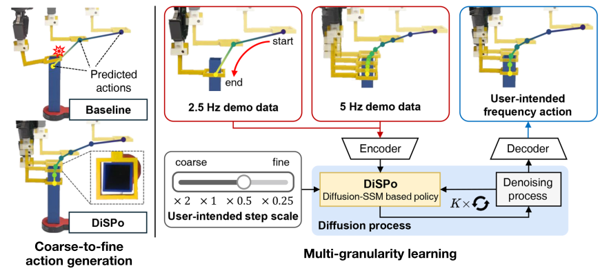
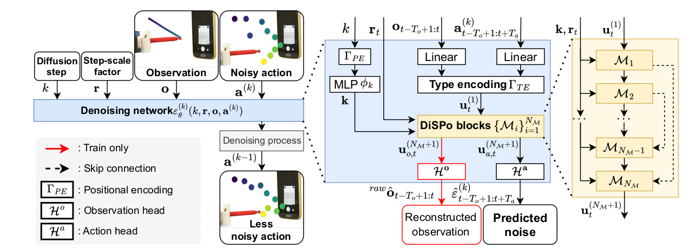
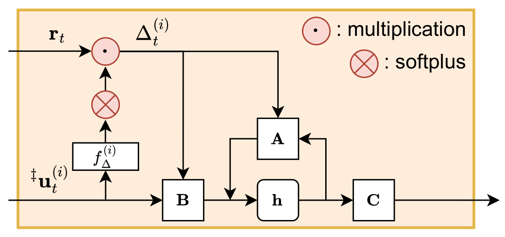

DiSPo: Diffusion-SSM based Policy Learning for Coarse-to-Fine Action Discretization
Abstract
We aim to solve the problem of learning user-intended granular skills from multi-granularity demonstrations. Traditional learning-from-demonstration methods typically rely on extensive fine-grained data, interpolation techniques, or dynamics models, which are ineffective at encoding or decoding the diverse granularities inherent in skills. To overcome it, we introduce a novel diffusion-state space model-based policy (DiSPo) that leverages a state-space model, Mamba, to learn from diverse coarse demonstrations and generate multi-scale actions. Our proposed step-scaling mechanism in Mamba is a key innovation, enabling memory-efficient learning, flexible granularity adjustment, and robust representation of multi-granularity data. DiSPo outperforms state-of-the-art baselines on coarse-to-fine benchmarks, achieving up to an 81% improvement in success rates while enhancing inference efficiency by generating inexpensive coarse motions where applicable. We validate DiSPo's scalability and effectiveness on real-world manipulation scenarios. Code and Videos are available at https://robo-dispo.github.io.
Overview

Metho
Overall Architecture

Step-scaled SSM

Video Presentation
BibTeX
@inproceedings{oh2026dispo,
title={DiSPo: Diffusion-SSM based Policy Learning for Coarse-to-Fine Action Discretization},
author={Oh, Nayoung and Jang, Jaehyeong and Jung, Moonkyeong and Park, Daehyung},
journal={Proceedings of the IEEE International Conference on Robotics and Automation (ICRA)},
year={2026},
}